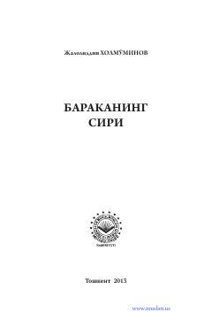

BSHayotimizda fayz-baraka va uning sir-asrorlari haqida ma'rifiy risola.
Ushbu risolada islomiy nuqtai nazardan барака tushunchasi, uning sir-asрорлари, hayotimizda файз-баракаni ta'minlovchi omillar hamda unga putur yetkazuvchi sabablar haqida so'z yuritiladi. Muallif mehnatsevarlik, halollik, shukrona, duo va isrofdan saqlanish kabi fazilatlar orqali turmushni farovon qilish yo'llarini oddiy va ravon tilda yoritib bergan.